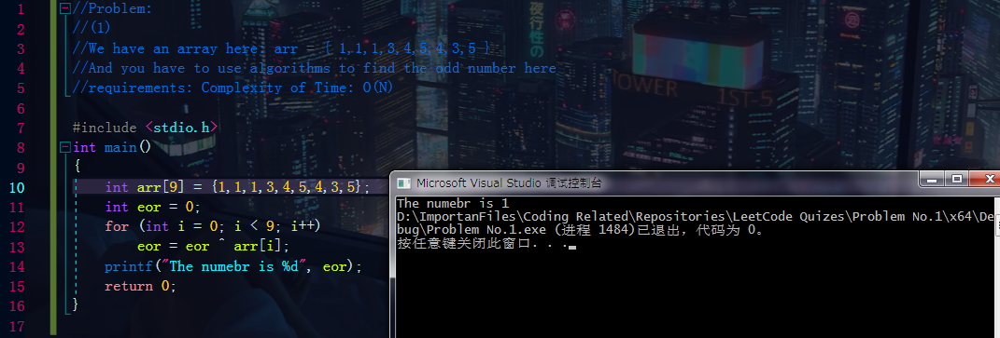

(1) :
One number in an array appeared only odd times, other numbers appeared even times, what is the odd number
requirements: Use the complexity of time: O(N)
Use the complexity of space: O(1)
- int eor = eor ^ (every elements in the array)
- then eor is the odd number, because a ^ 0 = a; b ^ b = 0; these two rules.

(2):
Two number in an array appeared only odd times, other numbers appeared even times, what are the odd numbers
same requirements as (1):
int eor = eor ^ (every elements in the array) = a ^ b
{ explain: every other elements appreared even times so after the operation they'll all just be zero, and in the end it'll just left a & b)
int eor' = eor' ^ every elements that at some digits of the numbers are 1 or 0 = a or b
{ explain: we know that a & b are different, so a ^ b != 0; then they have at least one digits in their binary codes that are different, and that means
one of them would be 1 and the other would be 0 at the same position. and after the operation, all the other elements appeared even
times so they just be 0 again, but this time, on that digit it's going to be left with only a or b:
for ex: a: 10011
b: 10010
we make eor' = eor' ^ every elements that have the fifth digits placed as 1,
then the eor' = a ^ .........
and since other numbers appeared even times, they'll all just be one.
therefore the eor' will just be a in this case
the final answer is:
first odd number is eor'
second odd number is eor' ^ eor.

this is genius btw.